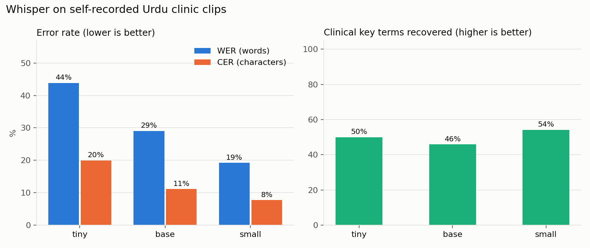

Experiment · Clinical speech-to-text · Urdu
Whisper halved its errors on Urdu clinic speech, but not on the medical words
A bigger model wrote better Urdu. It did not write better clinical terms.
By Muzammal Hussain · 19 October 2026 · 5 min read
Clinical documentation tools start with a transcript: record the consultation, turn speech into text, then let a language model draft the note. If the transcript is wrong, everything after it is wrong too. In Pakistan, and in UK clinics with Urdu-speaking patients, consultations happen in Urdu mixed with English words like X-ray, MRI, sugar and blood pressure. I wanted to know how well OpenAI's open Whisper model handles that, running locally on a laptop with no cloud service.
Key findings
- Going from the tiny to the small model cut the word error rate from 43.8% to 19.2%.
- Clinical key-term recall barely moved: 50%, 46% and 54% for tiny, base and small. A bigger model helped everyday Urdu, not the medical words.
- No model wrote X-ray or MRI correctly. MRI came out as مرائی.
- Left to guess the language, base and small labelled every clip as Hindi. The language has to be set to Urdu explicitly.
- It is fast enough for live use on a laptop: the small model transcribed 36 seconds of audio in about 4.7 seconds on a MacBook M4 CPU.
What I did
I wrote three short, fictional physiotherapy conversations in Urdu: lower back pain with red-flag questions (numbness, problems passing urine, fever, weight loss), a twisted knee that needs an X-ray and maybe an MRI, and a painful shoulder in a patient with diabetes and high blood pressure. I read each one aloud in my own voice, about 36 seconds per clip and 203 words in total. No real patient data was used.
Each clip was transcribed by three sizes of Whisper (tiny, base and small) using faster-whisper on the MacBook's CPU. I then measured:
- Word error rate (WER): the share of words that were wrong, missing or added, the way a teacher marks a dictation.
- Character error rate (CER): the same idea at the level of letters, ignoring spaces, because Urdu spacing is inconsistent.
- Key-term recall: out of 24 clinical words chosen in advance, such as پیشاب (urine), بخار (fever), گھٹنا (knee) and MRI, how many appear in the transcript.
Before scoring, both the reference and the transcript go through the same clean-up (Arabic vs Urdu letter forms, punctuation, diacritics), so keyboard differences are not counted as mistakes.
Results

| Model | WER | CER | Key terms | Seconds per second of audio |
|---|---|---|---|---|
| tiny | 43.8% | 19.9% | 50% | 0.04 |
| base | 29.1% | 11.2% | 46% | 0.05 |
| small | 19.2% | 7.7% | 54% | 0.13 |
Most mistakes are spelling, not hearing
The character error rate is much lower than the word error rate, which means most wrong words are only a letter or two off. The model hears the sound but writes it the way someone who knows no Urdu spelling rules might. The clearest pattern is the dropped do-chashmi he (ھ): گھٹنا (knee) became گٹنا, کندھے (shoulder) became کندے, and چڑھتے (climbing) became چڑتے. Retroflex letters were also mixed up, as in ڈاکٹر written as دکٹر.
A human reader would still understand most of these. Software would not: a red-flag detector that searches for گھٹنا will not find گٹنا.
English medical words are the weak point
The words that matter most for a clinical note were the ones most often lost. No model produced X-ray or MRI in a usable form, and physiotherapy came out as فیزیو تیاریپی. These are exactly the code-switched terms that Pakistani doctors and patients use every day. Even a core Urdu word slipped: the small model wrote درد (pain) as دارد, a Persian word, three times.
The Whisper paper reports multilingual results on read-speech benchmarks. It does not test clinical conversation or Urdu-English code-switching, so this is a gap worth measuring properly.
Which model would I use?
For a local clinical tool I would pick small. It was best on every measure, and at about 0.13 seconds of processing per second of audio it keeps up with a live consultation on a laptop. Base was not a safe middle ground: it recovered fewer key terms than tiny. But even small missed every X-ray and MRI, so choosing a bigger model is not enough on its own.
Limitations
This is a small pilot: one speaker, three clips, read speech in a quiet room. Real consultations have two voices, interruptions, background noise and different accents. When I listened back, I found that I had said مشکل where the script said تکلیف; the model was right there, so part of the measured error comes from my reading. The key-term check only looks for listed spellings and only checks whether a term appears at least once. These numbers show a pattern worth testing further, not a benchmark.
What I will test next
- Give Whisper a short list of medical words as a prompt and measure whether key-term recall rises, without any retraining.
- Score every occurrence of a clinical word and add a sound-alike match, to separate "heard but misspelled" from "not heard".
- Add a second speaker and background noise, and pass the transcripts to a local language model to see whether transcript errors change the red-flag section of the drafted note.
Model: Whisper (Radford et al., 2022, arXiv:2212.04356) run with faster-whisper. All transcripts, per-clip scores and every word error are in the GitHub repository.